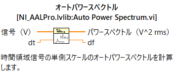
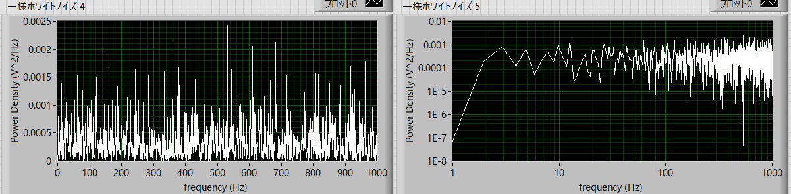
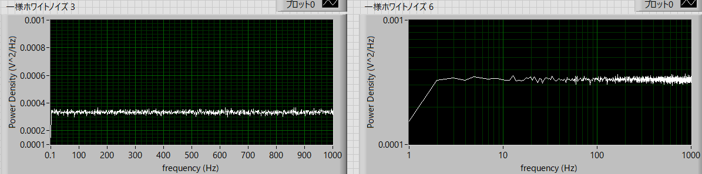
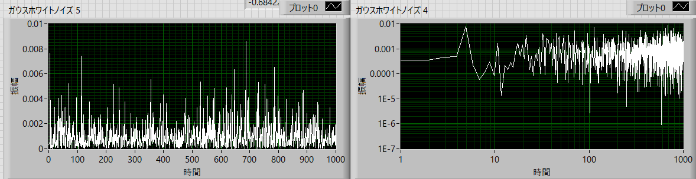
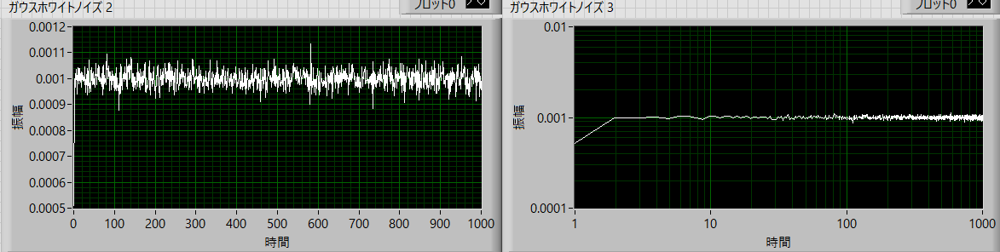
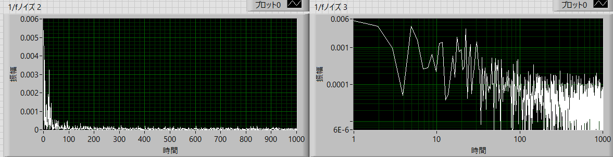
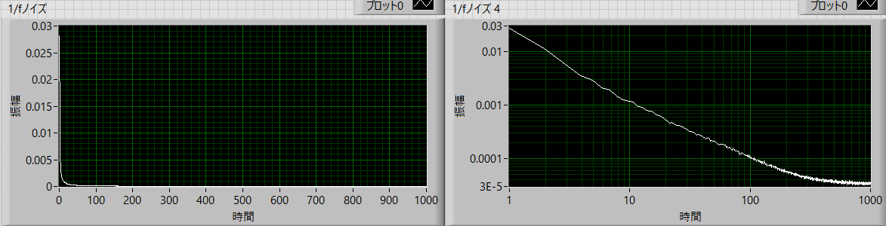
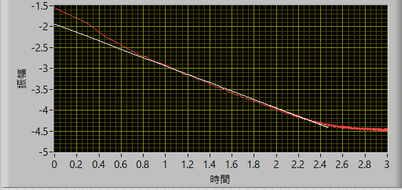

パワースペクトルの実際の作業内容-05
パワースペクトル
Labviewにおいては以下のアイコンを利用します
オートパワースペクトル

なぜ，”オート”なのかは不明です．．
面白いことに，ヘルプを見ると，
------------------------------------------------------------
パワースペクトルは、単側パワースペクトルを返します。
入力信号がボルト（V）の場合、パワースペクトルは電圧の二乗（Vrms2）の単位で表されます。
------------------------------------------------------------
パワースペクトルの縦軸の単位は，V2/Hz，だったはず．．．
たぶん，想像ですが，離散的な確率分布となるために，dfを掛けたものになっているのではないかと想像できます．
ただ，今後，異なるdfの波形を合成することもあり，以下に示すスペクトルはdfで割ったものとなります．
・一様ホワイトノイズ
前ページで作成した実波形，
サンプル（サンプル数）：2048
振幅 ：1
dt（このアイコン内での設定ではないですが） ： 0.5 ms
で生成した波形に対して，
FFTサンプル数 ： 2048
でパワースペクトルを計算すると，

となります．左右とも同じデータで，右図は両対数をとっています．
両対数プロットではなんとか周波数によらない一定のパワーの様子が見て取れますが，かなりノイジーです（ノイズのノイズ？）．
この，ノイズのノイズ，は複数回加算平均をとることで減らすことができます，パワースペクトルは位相情報を持たないので，加算しても本来のノイズ情報が失われないからです．
1,000回加算平均をとると，

と，かなりクリアな，周波数によらない一定の値となる結果となります．
この平均値は，0.000333 (V2/Hz)，と計算できますので，全積分（単側パワースペクトルなので，０～∞）をとると，
\(\Large \displaystyle <パワー密度> = 0.000333 \)
\(\Large \displaystyle df = \frac{S_{freq}}{n} = \frac{1}{S_{time}} = \frac{0.0005}{2048} = 0.9766\)
\(\Large \displaystyle f_{number} = \frac{n}{2} =\frac{2048}{2} = 1024\)
となるので，
\(\Large \displaystyle <x^2>=<パワー密度> \times df \times f_{number} = 0.000333 \times 0.9766 \times 1024 = 0.333 \)
と前ページの計算結果と一致します．
・ガウスホワイトノイズ
サンプル（サンプル数）：2048
標準偏差 ：1
dt（このアイコン内での設定ではないですが） ： 0.5 ms
で生成した波形に対して，
FFTサンプル数 ： 2048
でパワースペクトルを計算すると

となります．左右とも同じデータで，右図は両対数をとっています．
一様ホワイトノイズと同様に，両対数プロットではなんとか周波数によらない一定のパワーの様子が見て取れますが，かなりノイジーです（ノイズのノイズ？）．
1,000回加算平均をとると，

この平均値は，0.001001 (V2/Hz)，と計算できますので，全積分（単側パワースペクトルなので，０～∞）をとると，
\(\Large \displaystyle <パワー密度> = 0.001001 \)
\(\Large \displaystyle df = \frac{S_{freq}}{n} = \frac{1}{S_{time}} = \frac{0.0005}{2048} = 0.9766\)
\(\Large \displaystyle f_{number} = \frac{n}{2} =\frac{2048}{2} = 1024\)
となるので，
\(\Large \displaystyle <x^2>=<パワー密度> \times df \times f_{number} = 0.001001 \times 0.9766 \times 1024 = 1.001 \)
と設定した標準偏差の二乗と一致します．
ガウスホワイトノイズなので，ブラウン運動様式なのかと最初思っていましたが，”ガウス分布に従う直近の記憶によらないゆらぎ”，なのでホワイトノイズ様になるのでしょう．
（非マルコフ，というのだろうか？）
・逆ｆノイズ波形
1/ｆノイズ（ピンクノイズ）を生成するために，
サンプル（サンプル数） ：2048
ノイズ密度（これはよくわかりません．．．） ：0.1
指数（たぶん，f^(-n)のｎのこと） ： 1
dt（このアイコン内での設定ではないですが） ： 0.5 ms
で生成した波形に対して，
FFTサンプル数 ： 2048
でパワースペクトルを計算すると

となります．左右とも同じデータで，右図は両対数をとっています．
一様ホワイトノイズと同様に，両対数プロットではなんとか周波数によらない一定のパワーの様子が見て取れますが，かなりノイジーです（ノイズのノイズ？）．
1,000回加算平均をとると，

となり，両対数プロットをとると，直線状に減衰していることがわかります（高周波では寝てきている理由はわかりません）．
直線エリアのみで近似してみると，

と低周波領域が若干外れていますが，傾きが，-1.00387，となり，1/f，で減衰していることがわかります．
このように，パワースペクトルを計算することにより，ゆらぎの大きさ（分散），減衰の傾き，などを推定することができます．
では，次に両対数プロットをとったところの問題点，解決策を考えていきましょう．